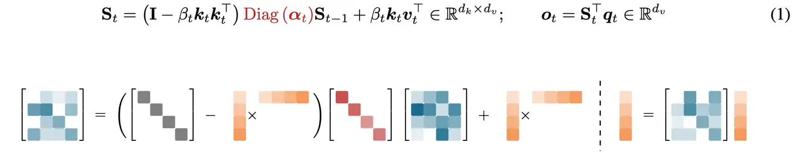
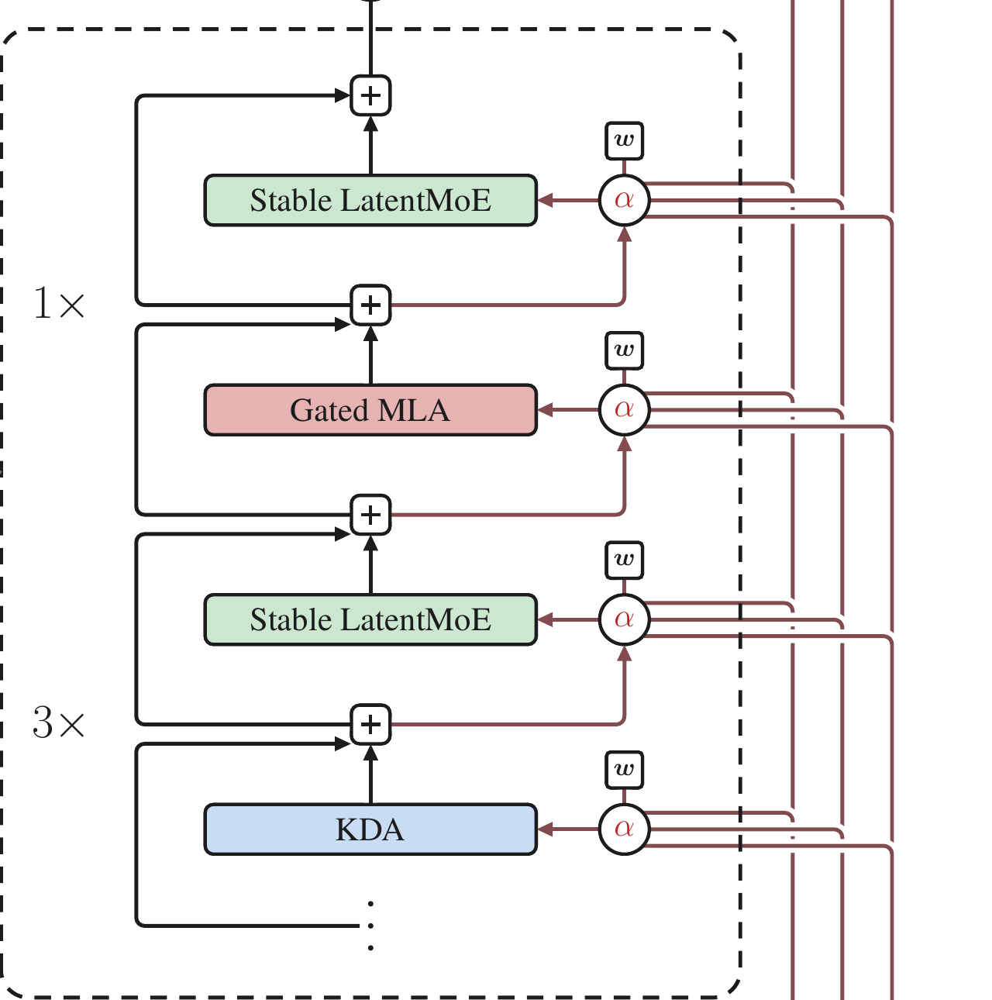
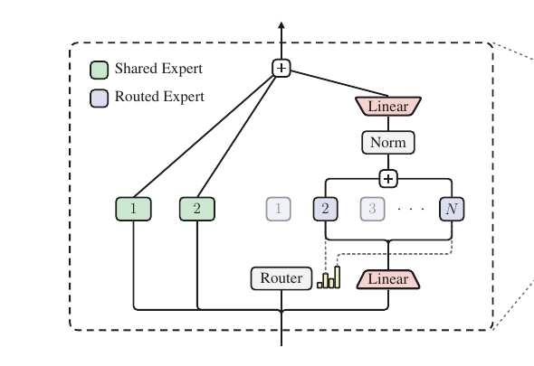
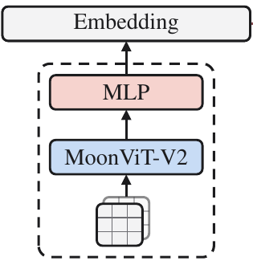

跨 Token：
Context 越长，KV Cache 越大。Decode 的每一步都要加载更长的历史，容量、访存和延迟随长度增长。
qnow
K₁V₁
K₂V₂
…
Kₜ₋₁Vₜ₋₁
KₜVₜ
Chapter 01 / Prefill attention
Activation 的 4 行对应 4 个 token；Q/K/V 投影保留 token 轴，只改变横向的 feature 维度。
Chapter 02 / One-query attention
一行 Query 对全部可见 Key 产生一组 token 权重；同一组权重混合 Value 行，得到一行输出。
Chapter 03 / Decode attention
Decode 每次新增一个 token；K/V cache 因而增加一行，当前 Query 读取完整的 5-token 历史。
Chapter 04 / Multi-Head Attention
MHA 让不同 head 在不同子空间独立建模关系；4 条 Attention 路径并行执行，输出最后合并。
Chapter 05 / Grouped-Query Attention
GQA 保留 4 条 Query/Attention 路径，仅将 4 组 K/V 压缩为 2 组共享状态，降低 cache 规模。
Chapter 06 / Multi-head Latent Attention
MLA 将每个历史 token 的完整 multi-head K/V 替换为更紧凑的 latent 表示；非吸收实现可在使用时恢复 K/V。
token 轴有 5 行；每行常驻 8 个 head-specific blocks
token 行数仍是 5；每行保存的状态明显更窄
Storage effect：同样 5 个历史 token，cache 的行数不变；每行保存的状态从完整 multi-head K/V 变成更窄的 latent。
Chapter 07 / DeepSeek Sparse Attention
DSA 用轻量 Indexer 从历史中选出 Top-K token；核心 Attention 只读取这些位置的 latent KV。
为当前 token 在历史位置中寻找最相关的候选。
核心 Attention 只访问被选中的历史状态。
Chapter 08 / GLM-5.2 assembly
MLA、DSA、IndexShare 与 MoE 分别优化缓存、历史读取、跨层索引和 FFN 激活，共同支撑长上下文效率。
Chapter 09 / The scaling problem
先不看 K3 的模块名，只看规模扩大后出现的三类瓶颈：长历史要搬更多 KV，深层 residual 难以选择早期表示，Dense 扩容会抬高每 token 成本。
Context 越长，KV Cache 越大。Decode 的每一步都要加载更长的历史，容量、访存和延迟随长度增长。
Residual 逐层累加。网络越深，早期表示越容易混进累计流；当前层很难单独选择真正有用的早期信息。
Dense 扩容会让每个 token 执行更多参数。能否把能力拆成多个专家，只激活与当前 token 相关的少数路径？
Chapter 10 / Kimi K3 answers
第 9 页提出的三个 scaling 问题，在 K3 里分别落到 token、depth、channel 三条信息流；每一条都避免“规模变大就全量付费”。
KDA 把长历史持续写进固定尺寸 state。主干按 3× KDA + 1× Gated MLA 交替：高频路径不再保存逐 token KV，周期性的全局注意力保留紧凑 latent KV。
Block AttnRes 把不同深度的表示变成可寻址 sources。当前层用 learned query w 生成权重 α，按内容重读 embedding、前序 blocks 与当前 partial sum。
Router 读取 full-width x；W↓ 只压缩送往专家的 payload。两条路径并行：routing scores 从 x 选 expert，latent z 再被 dispatch、计算与聚合；RMSNorm / SiTU-GLU 稳住数值，QB 对齐专家负载。
Chapter 11 / Kimi Delta Attention
每个 token 都更新同一个 dk×dv 状态。按实际计算顺序读：先对旧状态做 channel-wise 遗忘，再修正当前 key 方向，写入新的 value，最后由 query 读取。

Chapter 12 / Hybrid Attention
论文中的一个 Hybrid block 由三组 KDA + Stable LatentMoE，再接一组 Gated MLA + Stable LatentMoE；整条主干重复这一排布，末尾再追加一层 Gated MLA。

Chapter 13 / Attention Residuals
第二个回答：把 residual 的固定等权累加改成 depth attention，让当前层按内容选择此前 block，避免单层贡献被持续稀释。

Chapter 14 / Stable LatentMoE
不是把整个模型变窄，也不是先压缩再 Router：Router 与 shared experts 仍读取完整 x[d]；只有 routed payload、专家计算和 All-to-All 进入更窄的 latent space ℓ。

Chapter 15 / Native multimodality
MoonViT-V2 相比前代主要改变训练方式：视觉塔与 K3 从头共享单一 next-token loss。推理时仍由 ViT 理解图像，经 projector 转成视觉 embedding，再与文本 embedding 一起交给 K3。

Chapter 16 / Architecture → systems
架构没有消灭成本，而是把 dense cost 重组为 cache、state、selection、routing 与通信；这些新成本需要在 Prefill 和 Decode 中分别分析。
系统重点：latent cache、Indexer/Top-K、Gather、routing 与 expert communication。
系统重点：recurrent state、depth reads、latent dispatch、expert balance 与视觉序列长度。